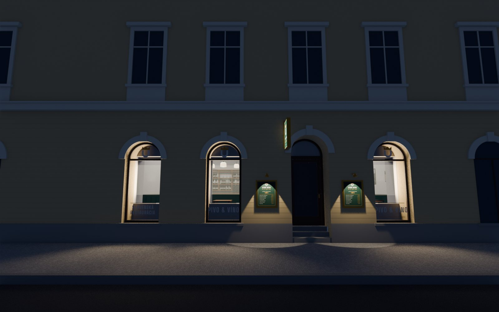
Návrh premeny reštaurácie Levant na slovenskú reštauráciu. 3D model podľa zamerania priestoru: ulica, vchod, bar, vitrína na víno a všetky tri miestnosti.
Polepy na výkladoch, obojstranný podsvietený pútač nad vchodom a dve tabule s denným menu v zlatom ráme. Posuňte jazdec a pozrite si tú istú ulicu cez deň a večer.
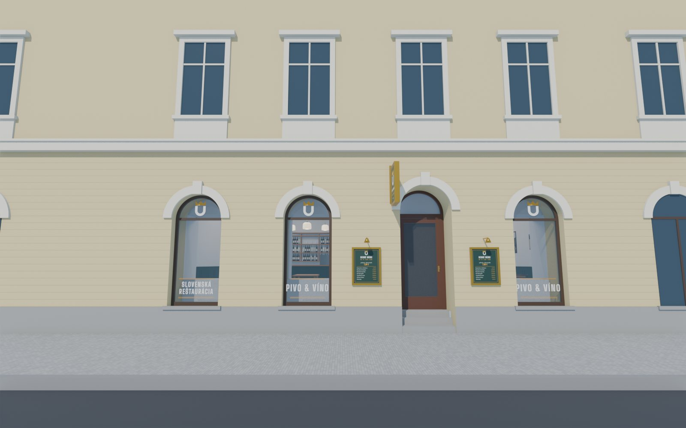
DeňVečerVľavo súčasný stav, vpravo návrh. Bar aj vitrína ostávajú na svojom mieste a v rovnakých rozmeroch, mení sa ich povrch, farba a svetlo.
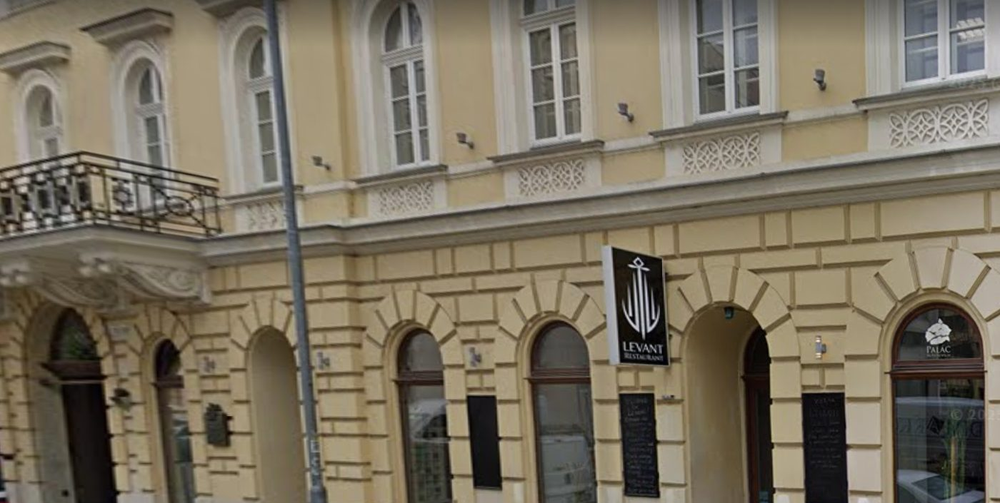
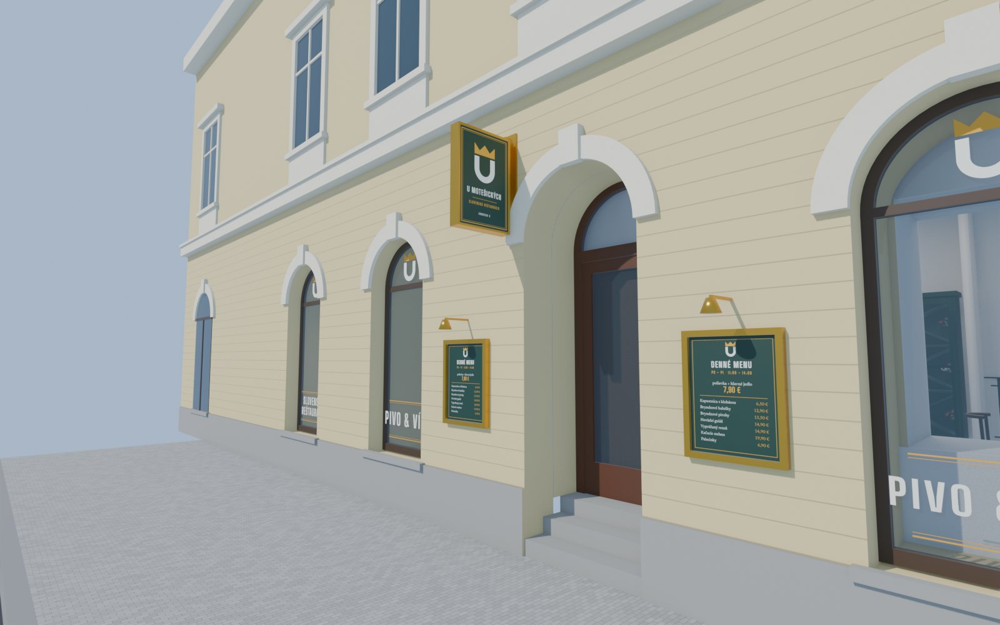
Hnedé drevené dvere so sklom ostávajú v hlbokom oblúku. Nad vchodom visí podsvietený pútač so symbolom reštaurácie, na výkladoch sú polepy „Slovenská reštaurácia“ a „Pivo & víno“.
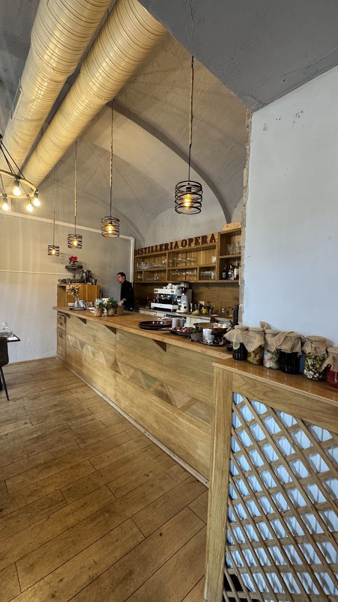
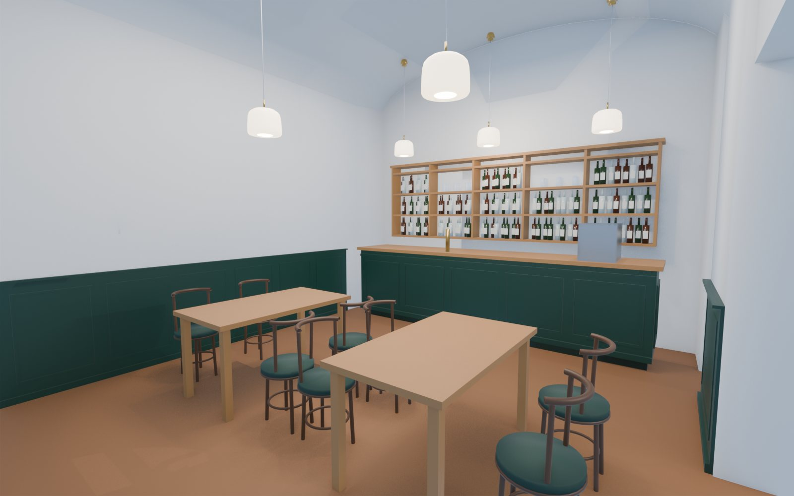
Rovnaký pult v rovnakých rozmeroch, natretý tmavozelenou s rámovanými panelmi, dubová doska a otvorený dubový regál s fľašami a pohármi na stene.
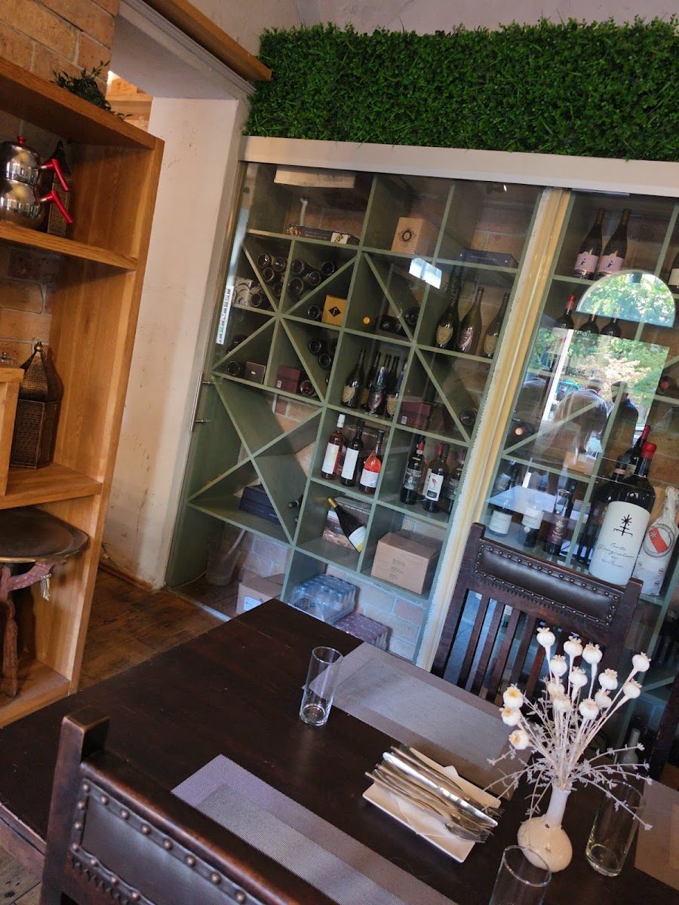
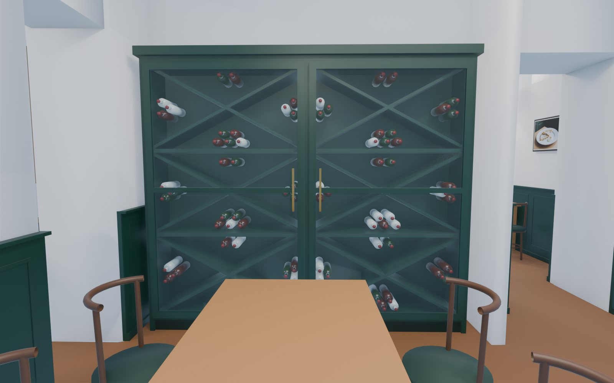
Vitrína s priehradkami do X, prekreslená do zelenej, aby ladila s obkladom. Presklené dvere ostávajú, fľaše ležia hrdlom von.
Zelený obklad do výšky 106,5 cm, mosadzné lampy s opálovým sklom, staré fotografie Bratislavy a fotky našich jedál na stenách, muškáty v oknách.
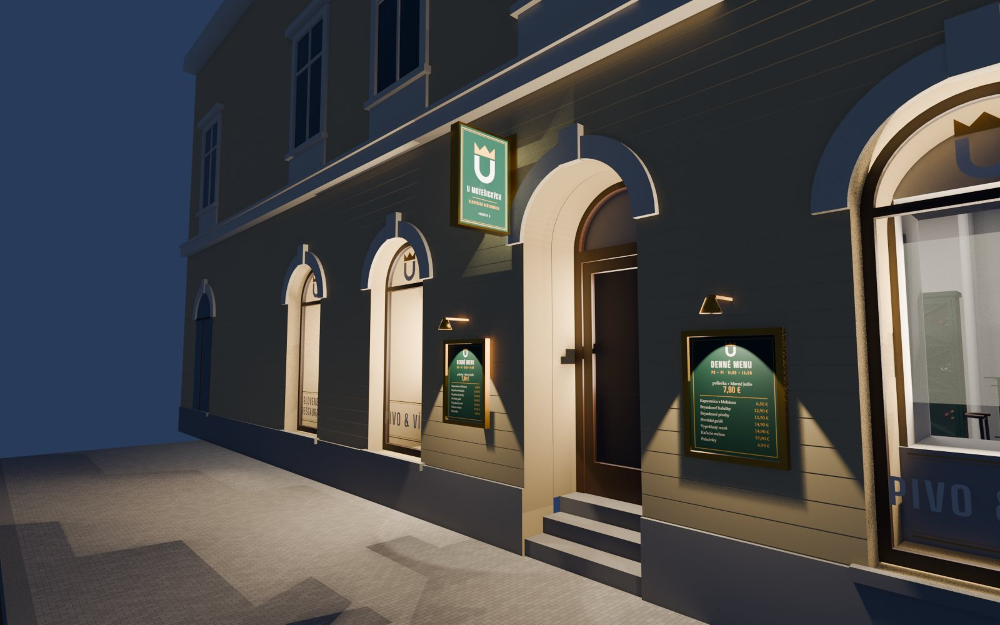
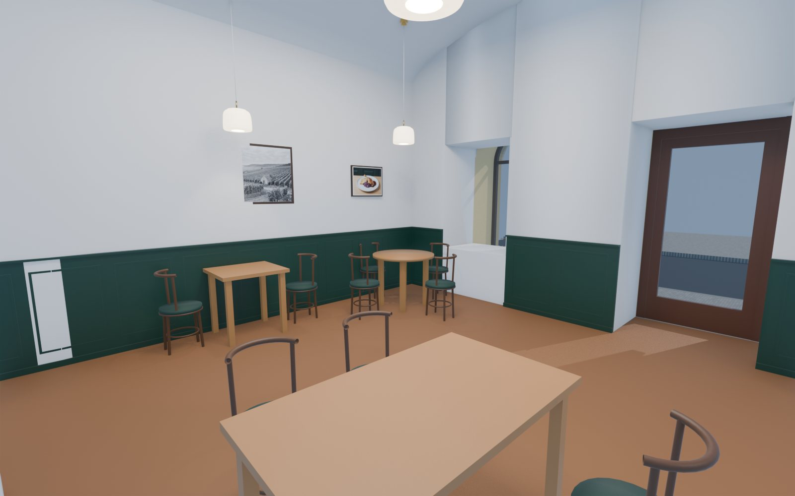
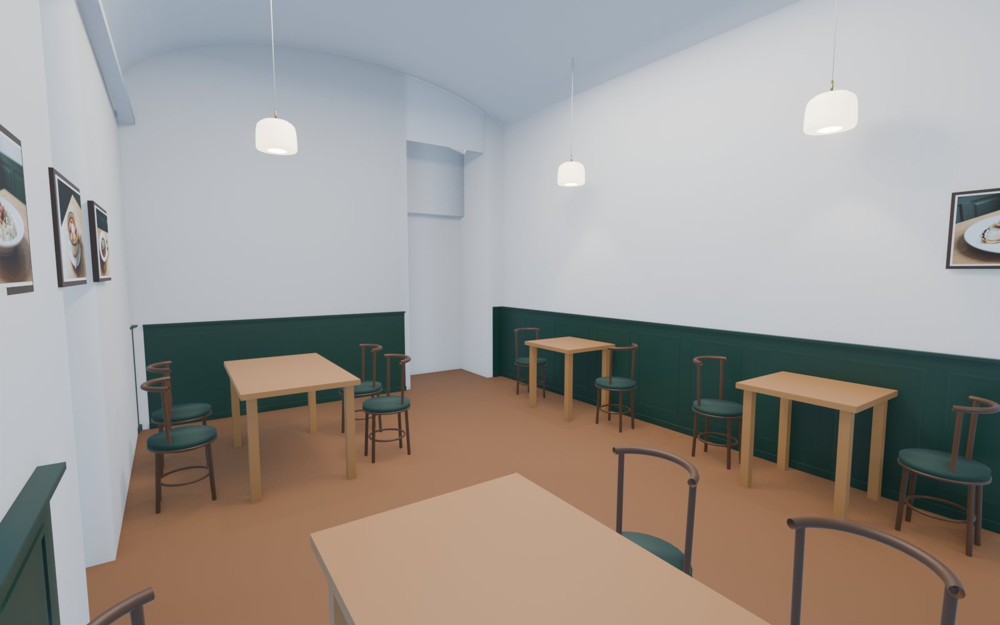
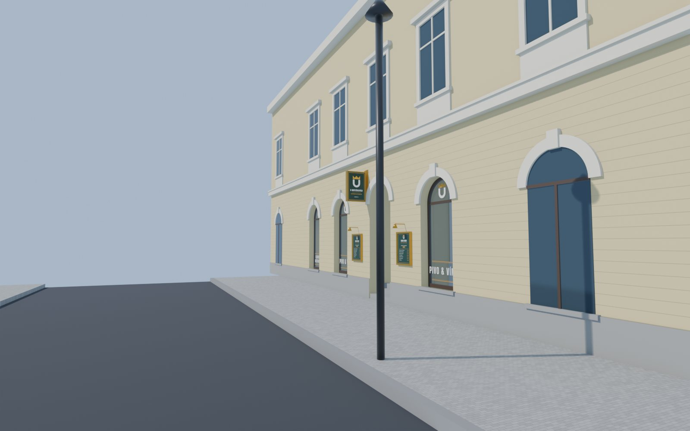
Model je postavený presne podľa zamerania priestoru vrátane skladu a toaliet. V prvej miestnosti bar a dva stoly pre štyroch, v druhej vitrína, stôl pre štyroch, dvojka a okrúhly stôl, v tretej dve štvorky a dve dvojky.
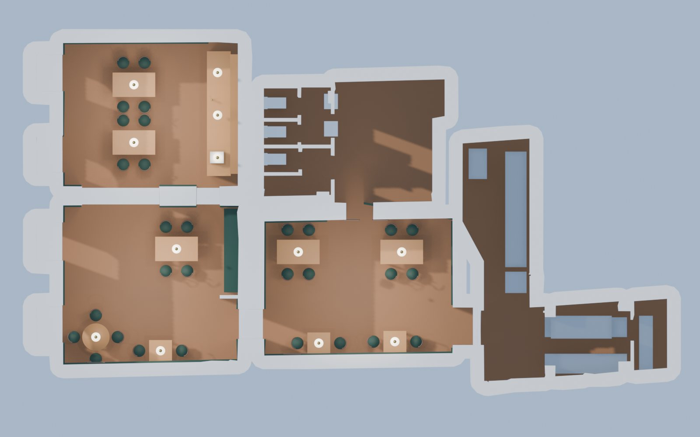
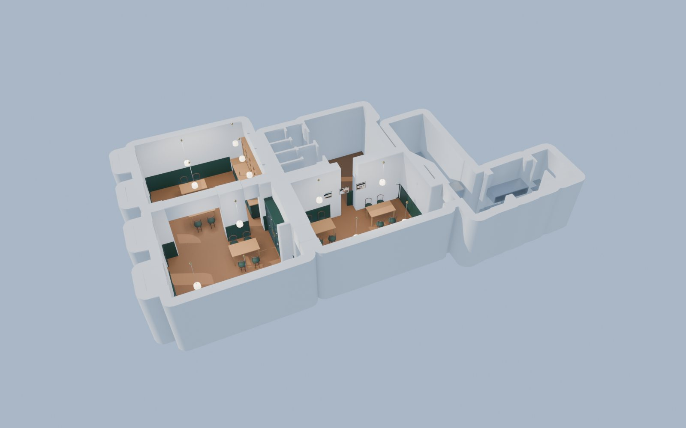
Zelený rámový obklad do výšky 106,5 cm v celej reštaurácii.
Pôvodný nábytok ostáva, nový náter, dubová doska a regál.
12 mosadzných závesných lámp s opálovým sklom.
8 fotografií starej Bratislavy a 7 fotiek našich jedál v rámoch.
Polepy z matnej fólie, kvety na parapetoch.
Podsvietený obojstranný pútač a dve tabule s denným menu.